광고도장기능사 (2005-04-03 기출문제)
1과목: 공예디자인
1. 다음 배색 중 가장 지적인 느낌의 배색은?
- 빨강이나 주황계통에 무채색을 배치
- 따뜻한 색과 차가운 색에 회색을 배치
- 고명도 끼리의 배색
- 대조적인 느낌의 배색
(정답률: 알수없음)

2. 한국 산업규격에서 문자의 크기는 무엇으로 나타내는가?
- 문자의 높이
- 문자의 넓이
- 문자의 굵기
- 문자의 치수
(정답률: 알수없음)
3. 정6각형의 A 의 각도는 얼마인가?
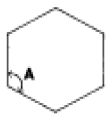
- 30°
- 60°
- 90°
- 120°
(정답률: 알수없음)
4. 다음 배색 중 가장 침착한 느낌을 주는 것은?
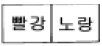
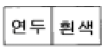
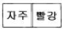
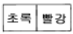
(정답률: 알수없음)
5. 우아하고 고귀함을 나타내는 색은?
- 남색
- 보라
- 녹색
- 회색
(정답률: 알수없음)
6. 공예의 특성에 관한 설명 중 잘못된 것은?
- 용도에 따라 물리적인 동시에 심리적으로도 충족시켜 주어야 한다.
- 조형예술의 한 부분으로 실용성을 근본으로 한 전통공예이다.
- 용도에 맞는 아름다움이 필연적으로 따라야 한다.
- 생활을 풍요롭고 윤택하게 하나 미와 생활을 결부시키지 않는다.
(정답률: 알수없음)
7. 공부방을 전체적으로 안정된 분위기를 만들기 위한 가장 적합한 색은?
- 청보라
- 노랑
- 회록색
- 자색
(정답률: 알수없음)
8. 다음 구성이 의미하는 것은?
- 공간의 상승
- 공간의 이동
- 공간의 점진
- 공간의 회전
(정답률: 알수없음)
9. 단위 형태끼리 또는 단위 형태와 전체 형태 사이에 시각적 안정감과 명쾌감을 느끼게 하며, 구성형식에서 중요한 역할을 하는 요소는?
- 통일
- 대조
- 균형
- 변화
(정답률: 알수없음)
10. 다음 표준난형(標準卵形)작도 중 원호 CE의 중심은?
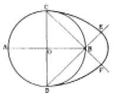
- A
- B
- C
- D
(정답률: 알수없음)
11. 붉은색에 흰색을 섞으면 어떻게 되는가?
- 명도, 채도가 높아진다.
- 명도는 높아지고, 채도는 낮아진다.
- 명도는 낮아지고, 채도는 높아진다.
- 명도, 채도가 낮아진다.
(정답률: 알수없음)
12. 1903년 호프만(Joset Hoffman)에 의하여 설립된 것은?
- 비인 공방
- 바우하우스
- 독일공작연맹
- 유켄트 스틸
(정답률: 알수없음)
13. 다음 그림 중 평행 투시도법으로 그린 그림은?
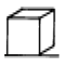
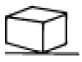
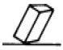
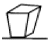
(정답률: 알수없음)
14. 명도가 높은 순서(고명도 → 저명도)대로 배열된 것은?
- 노랑 - 연두 - 파랑
- 연두 - 노랑 - 파랑
- 파랑 - 연두 - 노랑
- 노랑 - 파랑 - 연두
(정답률: 알수없음)
15. 색광 혼합에서 빨강과 녹색을 혼합한 결과는?
- 청록
- 자주
- 노랑
- 회색
(정답률: 알수없음)
16. 다음 그림은 어떠한 구성인가?
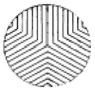
- 원심성
- 동심성
- 구심성
- 대비성
(정답률: 알수없음)
17. 도면의 공업규격에 관한 설명 중 틀린 것은?
- 도면의 크기는 도면 번호가 커짐에 따라 작아진다.
- 도면의 단변과 장변의 비는 1:√2이다.
- 도면 A0의 넓이는 약 1m2이다.
- 도면 A4는 1⑤mm x 148mm이다.
(정답률: 알수없음)
18. 다음 그림과 같은 입체의 우측면도는? (단, 제3각법)
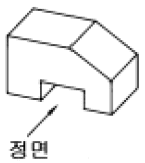
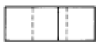
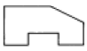
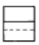
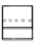
(정답률: 알수없음)
19. 먼셀(Munsell)의 색입체를 수직으로 절단하면 어떤 면이 나타나는가?
- 등색상면
- 등채도면
- 등명도면
- 색상환
(정답률: 알수없음)
20. 다음 중 명시도가 가장 높은 배색은?
- 색상이 다르고 채도가 같은 색의 배색
- 명도차가 큰 색의 배색
- 명도차가 비슷하고 밝은 색의 배색
- 채도의 차가 크고 유사색의 배색
(정답률: 알수없음)
2과목: 광고도장재료
21. 치수선이나 해칭선 등에 사용되는 선은?
- 가는 실선을 사용한다.
- 외형선 굵기의 반 정도에 해당되는 쇄선을 사용한다.
- 굵은 실선을 사용한다.
- 실선 굵기의 반에 해당되는 파선을 사용한다.
(정답률: 알수없음)
22. 다음 색 중 낡고 노쇠한 느낌을 주는 색은?
- 회색계통
- 녹색계통
- 보라계통
- 빨강계통
(정답률: 알수없음)
23. 다음 중 박엽지가 아닌 것은?
- 글라싱지
- 인디아지
- 콘덴서지
- 그라비어지
(정답률: 알수없음)
24. 다음 중 아크릴판의 접착제는?
- 클로르포름
- 에폭시
- 실리콘
- 본드
(정답률: 알수없음)
25. 석재의 특성 중 틀린 것은?
- 불연성 이다.
- 강도가 크다.
- 내구성이 크다.
- 채석이 편리하다.
(정답률: 알수없음)
26. 스텐레스 강판은 철에 어느 성분이 포함되어 있는가?
- 니켈과 망간
- 니켈과 크롬
- 니켈과 탄소
- 크롬과 탄소
(정답률: 알수없음)
27. 다음 섬유 중에서 비중이 가장 높은 것은?
- 아마
- 유리 섬유
- 양털
- 아크릴
(정답률: 알수없음)
28. 네온관(管)으로 가장 많이 사용되는 관의 규격은?
- φ18mm
- φ15mm
- φ14mm
- φ12mm
(정답률: 알수없음)
29. 도막이 긴 파장, 자외선 등 빛의 자극을 받으면 이 자극을 제거한 후에도 어느 시간 동안 광채를 내는 도료는?
- 이온도료
- 발광도료
- 형광도료
- 방화도료
(정답률: 알수없음)
30. 목재 세공품이나 도자기의 접착제로 쓰이는 것은?
- 콩풀
- 녹말풀
- 옻풀
- 해초풀
(정답률: 알수없음)
31. 다음 중 용제에 대한 설명으로 적합한 것은?
- 페인트에 내구성을 올려주기 위하여 사용된다.
- 도장한 페인트를 빨리 건조시키기 위하여 사용된다.
- 액체인 페인트를 굳히는데 사용된다.
- 점도를 조절하기 위하여 사용된다.
(정답률: 알수없음)
32. 아크릴 수지에 대한 설명 중 맞는 것은?
- 상처가 나지 않고 가격이 저렴하다.
- 절단가공이 어렵다.
- 내약품성이 작다.
- 착색이 자유롭고 색상이 다양하다.
(정답률: 알수없음)
33. 투명하며 내수성, 내열성이 좋고 두께 유지가 좋아 가구, 실내목재 가공품에 주로 쓰이는 도료는?
- 캐슈도료
- 래커 에나멜
- 클리어 래커
- 에나멜 페인트
(정답률: 알수없음)
34. 다음 중 판재(板材)의 규격에 해당하는 것은?
- 두께 3㎝미만, 폭은 두께의 2배 이상인 목재
- 두께 3㎝미만, 폭은 두께의 2배 이하인 목재
- 두께 6㎝미만, 폭은 두께의 3배 이상인 목재
- 두께 6㎝미만, 폭은 두께의 3배 이하인 목재
(정답률: 알수없음)
35. 목재의 색깔은 무엇 때문에 생기는가?
- 목재 중에 포함된 휘발성분 때문
- 세포막과 세포사이에 있는 수분 때문
- 세포막과 세포속에 있는 세포질 때문
- 세포막과 세포 속에 포함되어 있는 유색 물질 때문
(정답률: 알수없음)
36. 조명의 종류 중에서 센서 라이팅(sensor lighting)의 장점으로 거리가 먼 것은?
- 안정성
- 경제성
- 편리성
- 장식성
(정답률: 알수없음)
37. 다음 중 안료가 포함되지 않은 것은?
- 유성바니스
- 유성페인트
- 수성페인트
- 락카에나멜
(정답률: 알수없음)
38. 다음 연마지의 규격 중에서 가장 고운 것은?
- #80
- #120
- #180
- #220
(정답률: 알수없음)
39. 보우트, 정화조, 선박, 헬멧 등에 널리 사용되는 섬유 강화 플라스틱이란?
- FRP
- PA
- SBR
- PVC
(정답률: 알수없음)
40. 다음 특수 합판 중 합판의 표피에 종이, 헝겊, 금속지 등을 접착한 것은?
- 곡면 합판
- 플라이 합판
- 럼버코어 합판
- 오버레이 합판
(정답률: 알수없음)
3과목: 광고도장
41. 실크 스크린 날염에 관한 일반적인 설명 중 잘못된 것은?
- 설비 재료가 간편하다.
- 모든 인쇄물에 사용이 가능하다.
- 인쇄물의 크기에 제한이 없다.
- 사용되는 색이 제한되어 있다.
(정답률: 알수없음)
42. 산업안전 표지의 종류에 해당되지 않는 것은?
- 사용금지 표지
- 화기금지 표지
- 출입허용 표지
- 금연표지
(정답률: 알수없음)
43. 금속과 같이 전하의 이동이 쉬운 물체, 즉 전류가 잘 흐르는 물체를 무엇이라 하는가?
- 절연체
- 도체
- 반도체
- 저항체
(정답률: 알수없음)
44. 상칠을 할 때 적합한 스프레이건의 노즐 지름은?
- 1~1.5mm
- 2.0~2.5mm
- 3.0~3.5mm
- 3.5mm 이상
(정답률: 알수없음)
45. 광고구성에 있어서 주의력 집중을 위한 시각 유도의 계획에 필수적인 기법은?
- 레이아웃(Lay-out)
- 텐션(Tension)
- 디스플레이(Display)
- 스페이싱(Spacing)
(정답률: 알수없음)
46. 광고물 설치가 제한되는 장소가 아닌 곳은?
- 교량
- 동상
- 기념비
- 옥상
(정답률: 알수없음)
47. 작업 안전 교육 방법에 대한 내용 중 틀린 것은?
- 상대방의 말을 잘 들어 본 다음 잘못된 점을 고쳐 나간다.
- 상대방의 결함은 무조건 인정하도록 한다.
- 스스로 모범을 보인다.
- 작업 태도에 대한 평가를 반드시 실시한다.
(정답률: 알수없음)
48. 옥외광고의 특성이 아닌 것은?
- 대상은 불특정 다수인이다.
- 통행인구에 따른 효과변화가 없다.
- 지역적인 제한이 있으나 시간에 긴급성이 없다.
- 장기적이고 반복적인 효과가 있다.
(정답률: 알수없음)
49. 다음 중 도장용 기구인 롤러 브러시의 단점은?
- 두꺼운 도장에 적합하지 않다.
- 손으로 직접 칠하기 어려운 높은 부분 도장에 적합하지 않다.
- 회전속도를 빠르게 하면 도료가 흩날린다.
- 평면 등 면적이 넓은 피도장물을 능률적으로 도장할 수 없다.
(정답률: 알수없음)
50. 다음 중 척도의 종류가 아닌 것은?
- 현척
- 축척
- 배척
- 감척
(정답률: 알수없음)
51. 다음 나무 중 활엽수는?
- 소나무
- 느티나무
- 삼나무
- 향나무
(정답률: 알수없음)
52. 문자 디자인의 설명이 바르지 못한 것은?
- 단순한 의사전달 수단을 넘어 새로운 이미지를 전달하는데 큰 역할을 하고 있다.
- 문자 디자인은 기업이나 제품의 얼굴이다.
- 산업 사회의 발달에 따라 개성적이고 독창적이어야 한다.
- 이미지가 약해야 언제 어디서나 쉽게 접근하여 필요에 따른 역할이 증대된다.
(정답률: 알수없음)
53. 도막의 건조과정에서 일어나는 현상으로 고습도의 장소에서 도장시 습기가 도막에 응축하여 도면이 유백색으로 되는 현상은?
- 백화현상
- 블리스터링
- 실날림 현상
- 브론즈 현상
(정답률: 알수없음)
54. 안전 관리의 목적에 대한 설명 중 틀린 것은?
- 작업자가 불안전한 행동을 하지 않도록 한다.
- 작업장을 안전하고 쾌적한 분위기로 만든다.
- 공업 재해를 예방한다.
- 생산 능률을 저하시킨다.
(정답률: 알수없음)
55. 도장 작업을 할 때 조색 방법이 아닌 것은?
- 착색력이 큰 원색을 다른 색에 넣어 혼합할 때는 소량씩 첨가하여 색을 맞춘다.
- 조색은 사용량이 적은 색 부터 혼합한다.
- 조색할 때의 색과 건조한 색이 다르게 보이므로 조색 후 건조시켜 색비교를 하여야 한다.
- 동일 제품의 도료, 착색제를 사용한다.
(정답률: 알수없음)
56. 문자디자인을 할 때 우선적으로 고려해야 될 사항과 거리가 먼 것은?
- 균형감을 고려한다.
- 조화감을 고려한다.
- 되도록 크게, 개성있게 표현한다.
- 읽기 쉽게 표현한다.
(정답률: 알수없음)
57. 다음 광고물 중에서 제한받는 내용이 아닌 것은?
- 지면이나 건물 기타 공작물 등에 고정되지 않은 간판
- 외국문자로 표시된 간판
- 형광도료를 사용한 간판
- 이동이 가능한 간판
(정답률: 알수없음)
58. 옥외광고물을 심의하기 위한 광고물관리심의위원회의 구성 방법 등에 대한 규정으로 틀린 것은?
- 위원회는 3인 이상의 위원으로 구성되는 소위원회를 설치, 운영할 수 있다.
- 위원회의 위원의 임기는 2년으로 한다.
- 위원수는 위원장·부위원장을 포함한 위원중 관계 공무원은 반수미만이어야 한다.
- 위원회의 위원장은 옥외광고업무 담당과장이 된다.
(정답률: 알수없음)
59. 네온 사인에서 빛을 발하게 되는 원리는?
- 유리관 양끝 전극의 고전압에 따른 방전
- 특수 고열처리에 의한 효과
- 발광체인 필라멘트의 효과
- 유리관의 색깔에 따른 효과
(정답률: 알수없음)
60. 나무 무늬를 살리며 착색시키기 위하여 사용되는 착색제의 필요조건이 아닌 것은?
- 투명도가 낮을 것
- 착색력이 좋을 것
- 착색방법이 간단할 것
- 번지지 않을 것
(정답률: 알수없음)